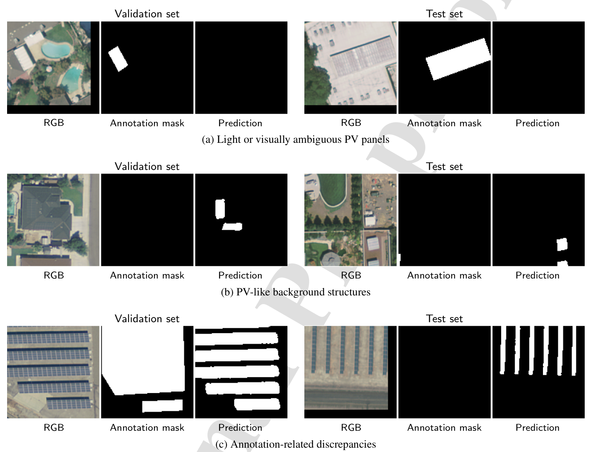

Mapping distributed solar with computer vision
Distributed solar installations are scattered across rooftops and other small sites. Knowing their locations and panel areas can help grid planners fill gaps in solar inventories. This research uses computer vision to identify the pixels in an aerial image occupied by photovoltaic panels.
I worked with Yen-Hsi Chou through a research mentoring collaboration during 2023–2025, alongside Anderson de Queiroz. Our paper compares model architectures, transfer learning, and the selection of training examples.

Figure 4 of Chou et al. (2026) shows the study locations, an aerial image, a smaller image patch, and its reference mask. White areas in the mask mark the panels annotated for training and evaluation.
Comparing models and training methods
The study examines three sets of choices. First, it compares seven segmentation architectures with a common encoder, then compares encoders for the selected architecture. Next, it tests ImageNet initialization and the effect of keeping some pretrained encoder layers fixed during training. Finally, it tests reusing difficult image patches in later training rounds, sometimes skipping the examples with the highest training errors.
The dataset contains 601 aerial images and 19,863 annotated photovoltaic-array polygons from four California cities. Images are split into blocks before smaller patches are extracted. Keeping each block’s patches together in the training, validation, or test set helps prevent overlapping imagery from appearing in different sets.
Main findings
U-Net++ with a ResNeSt-50 encoder, initialized from ImageNet and fully fine-tuned, achieved a test intersection-over-union score of 0.8269. This metric measures the overlap of predicted and reference panel areas. Keeping encoder stages fixed produced lower scores.
Reusing high-error patches did not consistently improve on standard training. Skipping a small fraction of examples helped within those experiments, but the validation and test results did not establish an overall advantage.
Errors had several causes: bright panels were difficult to detect, some roof structures resembled panels, and reference annotations sometimes omitted panels or treated gaps between rows inconsistently.

Figure 8 of Chou et al. (2026) compares images, annotations, and predictions for difficult examples. The bottom row shows how inconsistent annotations can produce a disagreement even when the model detects visible panels.
Interpreting model performance
The comparisons help distinguish the effects of model architecture, transfer learning, and training-example selection. Examining the images alongside the scores also reveals where annotation quality limits evaluation. Each configuration was trained once on imagery from four cities; performance in other regions, detection of complete installations, and estimation of installed capacity remain open questions.